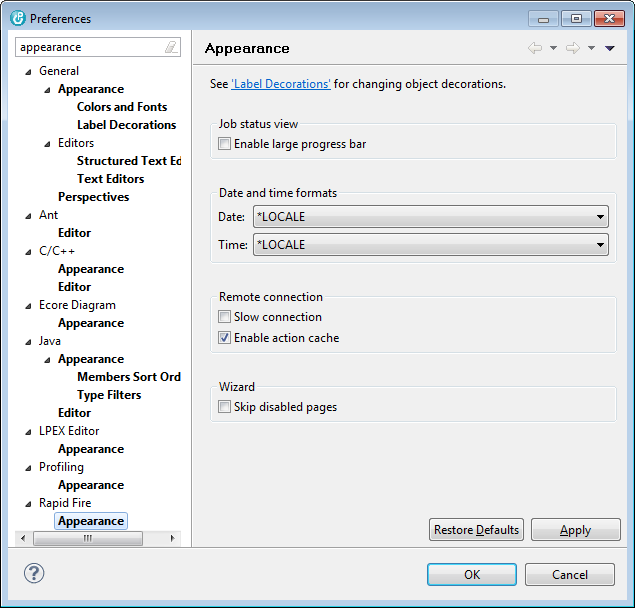

The available options are:
Job status view
| Enable large progress bar | - | Specifies how the progress bar that visualizes the file copy status is rendered in the Rapid Fire Job Status view. |
Date and time format
| Date | - | Specifies how Rapid Fire displays date values. |
| Time | - | Specifies how Rapid Fire displays time values. |
Remote connection
| Slow connection | - | Specifies the throughput of your connection to the host. When this option is enabled, Rapid Fire reduces fetching data from the host to a minimum, of course with less comfort for the user. |
| Enable action cache | - | Specifies whether the state of menu options are cached. When caching is active, context menus open faster but there might still be a problem with caching. Disable the action cache if menu options that should be enabled are disabled. |
Wizard
| Skip disabled pages | - | Specifies whether the Rapid Fire wizards skip disabled pages. It is recommended to keep this option unchecked for the first time, to better understand how Rapid Fire must be configured for copying data. |